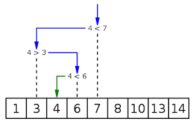
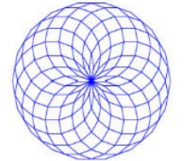
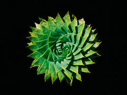

En NSI cette année, nous avons eu à réaliser de nombreux projets ! (qui furent plus ou moins aboutits il est juste de le noter ):
En gros, on a pu:
- Apprendre le systeme de recherche dichotomique :
- Créer de superbes rosaces:
- Tout donner pour comprentre comment fonctionne le système des fractales...
- Comprendre comment fonctionne le binaire , tenter de faire un morpion, faire du tri de photos, et encore de nombreux autres projets ma foi plutôt sympas et ludiques en terme d'apprentissage!!!


(ça, c'était pour compenser l'échec du point suivant)
